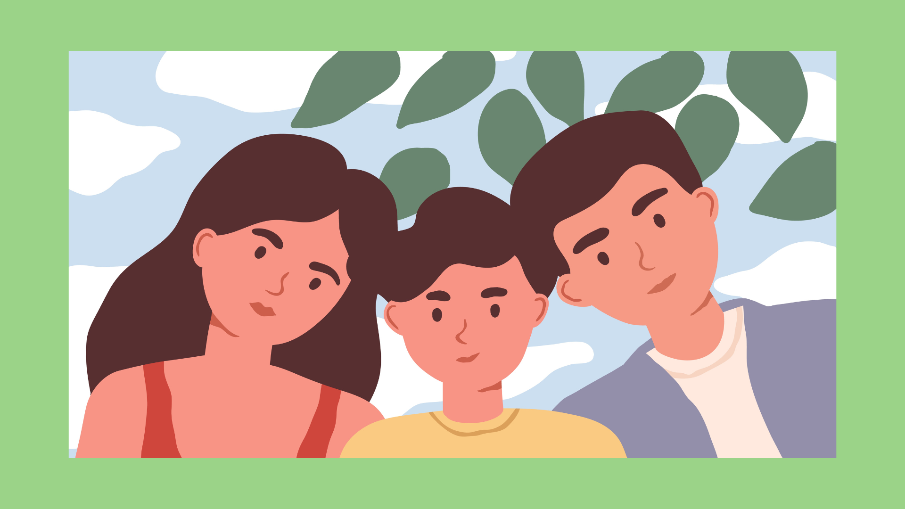

إعداد أدوات الرقابة الأبوية: يمكنك تقديم المشورة للآباء والأمهات حول كيفية استخدام أدوات الرقابة الأبوية. يمكن تخصيص هذه الأدوات وفقًا لأعمار الأطفال للحد من الوصول إلى المحتوى الغير مناسب.
فعّل "Safe Search" على متصفحك: عندما تفعّل خاصية "البحث الآمن" في المتصفح، يمكن للوالدين تقديم بيئة بحث آمنة لأطفالهم. هذه الخاصية تُمكن الوالدين من تحديد نطاق المحتوى المناسب.
استخدم إعدادات الخصوصية الآمنة: في التطبيقات والألعاب الإلكترونية، يُنصح بضبط الإعدادات الخصوصية بعناية. تجنب مشاركة المعلومات الشخصية، وكذلك قم بتغطية كاميرات الويب عندما لا تُستخدم للحفاظ على الخصوصية.
تعليم الأطفال حول السلوكيات الآمنة على الإنترنت:
- اشرك أطفالك في وضع قواعد حول استخدام الأجهزة الإلكترونية، بما في ذلك تحديد الوقت والأماكن المناسبة للاستخدام.
- علمهم كيفية الحفاظ على خصوصية معلوماتهم والتأكيد على أهمية عدم مشاركة تلك المعلومات مع الغرباء.
- تذكيرهم بأن ما يُنشر عبر الإنترنت يُمكن أن يبقى هناك لفترة طويلة ومن الصعب حذفه، لذا يجب التفكير بعناية قبل المشاركة بأي شيء عبر الإنترنت.
حافظ على سلامة طفلك من خلال التواصل المفتوح:
- ابقَ على تواصل دائم ومفتوح مع أطفالك. حاول أن تكون متاحًا للحديث حول أي مشكلة قد يواجهونها عبر الإنترنت.
اضغط هنا للتعرف اكثر عن طرق الحماية عبر الانترنت و التعامل مع التنمر و الابتزتز و حالة فومو
اضغط هنا للتعرف اكثر عن برامج الحماية المهمة

- انتبه لعلامات الضيق أو القلق عندما يتعلق الأمر بنشاطاتهم على الإنترنت وحاول التعرف على ما يشغلهم ويشغل خواطرهم.
- تذكيرهم بأهمية الإبلاغ عن أي تجارب سلبية يمرون بها وكيفية التصرف بشكل مناسب، مثل حظر الأشخاص غير المرغوب فيهم أو الإبلاغ عن المواقف المزعجة للكبار الموثوق بهم.
الوقاية من الابتزاز الرقمى
التنمر الإلكتروني: ما هو وكيف يمكن إيقافه
التنمّر عبر الإنترنت: ما هو وكيف نوقفه